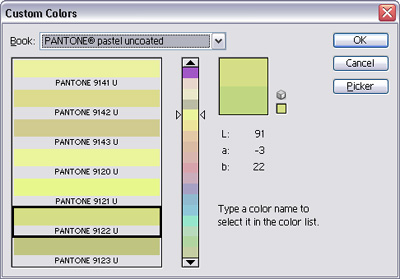

Adobe Color Book File Format Specification
Adobe Photoshop's Color Picker has a Custom Colors dialog that offers a wide variety of colors from several industry-standard color catalogs such as ANPA, DIC, Focoltone and Pantone.

The color catalog data comes from Adobe Color Book files. These file have the .ACB file extension on Windows and reside inside the ".../Presets/Color Books" folder in a typical installation.
Partly out of curiosity and partly because I needed the color data for a job, I went through reverse-engineering the file format since an official file format specification wasn't readily available. I have put together what I've come up with into an unofficial file format specification.
Data Types
There are three main data types used throughout a color book file. 16-bit and 32-bit integers and strings.
Integers are in big-endian arrangement, so make sure you swap the bytes as necessary when reading/writing. I don't know whether they should be treated as signed or unsigned. Signed has worked for me.
Strings are like Pascal strings, starting with a 32-bit integer that gives the string length, followed by a sequence of UTF-16 characters (as kindly pointed out by Spike Grobstein. Strings are not null-terminated therefore the string length gives the exact length of the string (without the length field). The UTF-16 characters are in big-endian order. Again, some byte swapping may be necessary.
Header
The file starts with a header that contains general information about the color book. The fields in the header are:
Signature
4 consecutive characters that always read "8BCB". This probably stands for "8B Color Book".
Book Version
This is a 16-bit integer denoting the file version. Photoshop 7.0 only opens files of version 1.
Book Identifier
A 16-bit integer. This is probably a unique identifier assigned by Adobe to each official color book. The most significant byte always seems to be 0x0b.
Book Title
A string. The title of the color book as it appears in Photoshop's color picker. A "^R" within the string stands for a registered trademark (®) symbol.
Color Name Prefix
This string is prepended to the beginning of the name of each color in the book.
Color Name Suffix
This string is appended to the end of the name of each color in the book.
Book Description
This string usually contains copyright information. A "^C" stands for the copyright symbol (©). "^R" is for the registered trademark symbol (®). I don't know if there are any other special sequences.
Color Count
A 16-bit integer. This can be more than the colors visible within Photoshop. Some color records can be dummy records (see Color Name) that are used as padding in order to control how colors get grouped in pages.
Page Size
A 16-bit integer that specifies the maximum number of colors that can appear on a page.
Page Selector Offset
The page selector in Photoshop's color picker display a sample color from each page. This offset specifies which of the colors on a page will be used as the page sample. "0" means the first (topmost) color. "1" means the second one and so on. If the offset exceeds or is equal to the number of colors on the page, the last color is used.
Color Space/Library Identifier
A 16-bit integer that specifies the color space/library. Values that Photoshop 7.0 recognizes are:
| Value | Meaning |
|---|---|
| 0 | RGB |
| 2 | CMYK |
| 7 | Lab |
The rest of the values can be found in the official "Adobe Photoshop 6.0 File Formats Specification", but they apparently don't work for color books. Note that the 6.0 specification has no information on color book files. The full range of color space/library identifier values are:
| Value | Meaning |
|---|---|
| 0 | RGB |
| 1 | HSB (HSV) |
| 2 | CMYK |
| 3 | Pantone |
| 4 | Focoltone |
| 5 | Trumatch |
| 6 | Toyo |
| 7 | Lab (CIELAB D50) |
| 8 | Grayscale |
| 10 | HKS |
Color Records
Immediately following the header are the individual color records. There are exactly as many color records as there was specified by the Color Count field.
Photoshop may display fewer colors then there are in the color book file because some color records are dummy records used for padding purposes. When a page has to contain fewer colors than the number specified by Page Size, dummy records are inserted. Photoshop doesn't display these records.
The structure of a single color record is as follows:
Color Name
A string. Concatenating the Color Name Prefix, the Color Name and the Color Name Suffix gives us the full name of a color as it appears in Photoshop's color picker. If the length of this string is zero, the entire color record is for padding (see Color Count.) The remaining fields of the color record are ignored.
Color Code
6 consecutive characters. This is probably a catalog code or short name. Sometimes they are padded with spaces on either side. Photoshop doesn't seem to be displaying this information to the user at all.
Color Components
Depending on the color space, there can be 3 or 4 bytes, one byte for each color component:
RGB
A byte for each of the Red, Green and Blue components. Each byte value directly translates to the corresponding level.
r = r_byte; // 0 thru 255
g = g_byte; // 0 thru 255
b = b_byte; // 0 thru 255
CMYK
A byte for each of the Cyan, Magenta, Yellow and Black components. Each is an unsigned value ranging from 0 to 255, representing 100 minus the intensity percentage, quantized to 255. To calculate the corresponding intensity percentage, subtract a byte value from 255, divide by 2.55 and then round to the nearest integer.
c = (255 - c_byte) / 2.55 + 0.5; // 0% thru 100%
m = (255 - m_byte) / 2.55 + 0.5; // 0% thru 100%
y = (255 - y_byte) / 2.55 + 0.5; // 0% thru 100%
b = (255 - b_byte) / 2.55 + 0.5; // 0% thru 100%
Lab
A byte for each of the Lightness, a chrominance and b chrominance components. The lightness percentage is quantized to 255. To get the lightness level percentage, divide the byte value by 2.55 and round to the nearest integer. The a and b chrominance values are offset by 128. To calculate their values, subtract 128 from the corresponding byte values.
l = l_byte / 2.55 + 0.5; // 0% thru 100%
a = a_byte - 128; // -128 thru 127
b = b_byte - 128; // -128 thru 127
Spot/Process Identifier
This field was probably added in Photoshop CS and beyond. 8 characters (bytes), "spflspot" for spot colors and "spflproc" for process colors. This just identifies the color book as a spot/process color book. (Thanks to Olivier for alerting me about the presence of these extra bytes in CS.)
Illustrated Example
Below is a portion from the beginning of "ANPA Color.acb" that ships with Adobe Photoshop 7.0 for Windows. Separate fields have been enclosed inside rectangles. A verbal walk-through will follow.
+-----------+-----+-----+-----------+------------
00000000h:|38 42 43 42|00 01|0B B8|00 00 00 23|00 24 00 24 ; 8BCB.......#.$.$
+-----------+-----+-----+-----------+------------
00000010h: 00 24 00 2F 00 63 00 6F 00 6C 00 6F 00 72 00 62 ; .$./.c.o.l.o.r.b
-------------------------------------------------
00000020h: 00 6F 00 6F 00 6B 00 2F 00 41 00 4E 00 50 00 41 ; .o.o.k./.A.N.P.A
-------------------------------------------------
00000030h: 00 2F 00 74 00 69 00 74 00 6C 00 65 00 3D 00 41 ; ./.t.i.t.l.e.=.A
-------------------------------------------------
00000040h: 00 4E 00 50 00 41 00 20 00 43 00 6F 00 6C 00 6F ; .N.P.A. .C.o.l.o
------+-----------+------------------------------
00000050h: 00 72|00 00 00 1F|00 24 00 24 00 24 00 2F 00 63 ; .r.....$.$.$./.c
------+-----------+------------------------------
00000060h: 00 6F 00 6C 00 6F 00 72 00 62 00 6F 00 6F 00 6B ; .o.l.o.r.b.o.o.k
-------------------------------------------------
00000070h: 00 2F 00 41 00 4E 00 50 00 41 00 2F 00 70 00 72 ; ./.A.N.P.A./.p.r
-------------------------------------------------
00000080h: 00 65 00 66 00 69 00 78 00 3D 00 41 00 4E 00 50 ; .e.f.i.x.=.A.N.P
------------+-----------+------------------------
00000090h: 00 41 00 20|00 00 00 21|00 24 00 24 00 24 00 2F ; .A. ...!.$.$.$./
------------+-----------+------------------------
000000a0h: 00 63 00 6F 00 6C 00 6F 00 72 00 62 00 6F 00 6F ; .c.o.l.o.r.b.o.o
-------------------------------------------------
000000b0h: 00 6B 00 2F 00 41 00 4E 00 50 00 41 00 2F 00 70 ; .k./.A.N.P.A./.p
-------------------------------------------------
000000c0h: 00 6F 00 73 00 74 00 66 00 69 00 78 00 3D 00 20 ; .o.s.t.f.i.x.=.
------------------------------+-----------+------
000000d0h: 00 41 00 64 00 50 00 72 00 6F|00 00 00 1F|00 24 ; .A.d.P.r.o.....$
------------------------------+-----------+------
000000e0h: 00 24 00 24 00 2F 00 63 00 6F 00 6C 00 6F 00 72 ; .$.$./.c.o.l.o.r
-------------------------------------------------
000000f0h: 00 62 00 6F 00 6F 00 6B 00 2F 00 41 00 4E 00 50 ; .b.o.o.k./.A.N.P
-------------------------------------------------
00000100h: 00 41 00 2F 00 64 00 65 00 73 00 63 00 72 00 69 ; .A./.d.e.s.c.r.i
------------------------------------+-----+-----+
00000110h: 00 70 00 74 00 69 00 6F 00 6E 00 3D|01 2C|00 06|; .p.t.i.o.n.=.,..
+-----+-----+-----------+-----------+-----+-----+
00000120h:|00 05|00 07|00 00 00 04|00 37 00 31 00 2D 00 31|; .........7.1.-.1
+-----+-----+-----+--+--+--+-----------+--------+
00000130h:|20 37 31 2D 31 44|F8|7B|7B|00 00 00 04|00 37 00 ; 71-1Dø{{.....7.
+--------------+--+--+--+--+-----+--+--+--+------
00000140h: 31 00 2D 00 32|20 37 31 2D 32 44|F1|78|78|00 00 ; 1.-.2 71-2Dñxx..
------+--------+--------------+--+--+--+--+-----+ /\ /
00000150h: 00 04|00 37 00 31 00 2D 00 34|20 37 31 2D 34 44|;/\..7.1./ \71/
+--+--+--+-----------+--------+------------/\+--+/ \ / \/
00000160h:|E3|72|7/\00 00 00 04|00 37 00 31 00 2D 00/ \20/ \../
+--+--+/ \----/\-+--+--+----/\----/\----/ \/ \/
00000170/\ 37 31/ \ 4/ \|68|67|00 / \0 / \0 /
/\ / \----/ \/ \--+-/\--/ \/ \/
/ \01/ \0 / \1 / \/
\/ \/ \/
The file starts with the mandatory "8BCB" signature. Following that, the file version comes. The version must be 1 for Photoshop 7.0 to open the file. Then comes the unique color book identifier: 0x0bb8.
Next, the length of the title string is reported to be 0x23 (35) wide characters long. The title string is: "$$$/colorbook/ANPA/title=ANPA Color". The 31- character prefix string is: "$$$/colorbook/ANPA/prefix=ANPA ". Note the extra space character at the end. The suffix, "$$$/colorbook/ANPA/postfix= AdPro" is 33 characters long. This also has an extra space just after the equal sign. This file has no description, but the description string is there anyway. Having a length of 31 characters, it reads: "$$$/colorbook/ANPA/description=". I don't know what this path scheme is all about.
The following 0x012c gives us the number of colors in this book (300). There will be a maximum of 6 colors per page with a page offset of 5, which in turn means that the right-hand page selector in Photoshop's color picker will use the last color of each page. The color space is 7 (Lab).
The color records start here. The first color name is 4 characters long: "71-1". This should be concatenated with the prefix and suffix we saw earlier to produce the full color name: "ANPA 71-1 AdPro". The 6-character short name for this color is: " 71-1D". Notice the padding space at the left. The lightness component reads 0xf8 (248). This rounds down to a percentage of 248 / 255 * 100 = 97. The a and b chrominance values are both 0x7b (123). Subtracting 128 gives -5 for both components.
Immediately after this, the second color record starts. The name length is again 4, etc...
See Also
- Adobe Photoshop Color File Format by Larry Tesler
- ACB2XML -- Tool for exporting color book data as XML